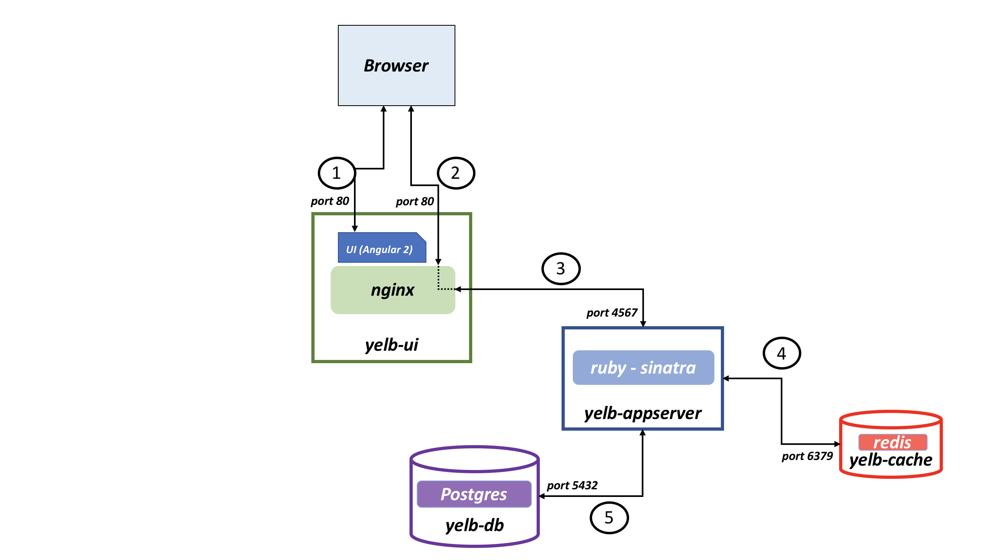

yelb¶
This sample catalog and documentation corresponds to a demonstration application called Yelb.
Why Yelb¶
When experimenting with new technologies you often follow tutorials that let you deploy purpose-built simple demo application. With Yelb I wanted to make this experience the other way around: start with an existing application and adapt it to the various technologies, services and platforms you are learning. I found this to be way more fun and useful.
See this blog post for more information.
Yelb can be deployed (potentially) on each of these abstractions from bare metal (EC2) all the way to Lambda (serverless).
Yelb architecture¶
The current architecture layout is pretty straightforward.
There is a front-end component called yelb-ui that is responsable for vending the JS code to the browser. This code is compiled from an Angular 2 application. Depending on the deployment model this code can be served from an instance (EC2), from a container (Docker, Kubernetes, ECS) or from an S3 bucket (serverless). The yelb-ui component may also include, depending on the deployment model, an nginx proxy.
At the time of this writing the only application component that exists is yelb-appserver. This is a Sinatra application that basically read and write to a cache server (redis-server) as well as a Postgres backend database (yelb-db). Redis is used to store the number of page views whereas Postgres is used to persist the votes. Note that the yelb-db container image is nothing more than Postgres customized to create the database schema the application relies on. In the serverless deployment, new system variables has been introduced to support a DynamoDB backend (as a replacement for both redis and postgres).
The picture below shows the architecture of Yelb:

Note: the picture above is representative of the instance (EC2) based deployment model and the container based deployment model. The serverless deployment model is architecturally different.
What does Yelb do?¶
Yelb allows users to vote on a set of alternatives (restaurants) and dynamically updates pie charts based on number of votes received. In addition to that Yelb keeps track of number of page views as well as it prints the hostname of the yelb-appserver instance serving the API request upon a vote or a page refresh. This allows an individual to demo the application solo, or involving people (e.g. an audience during a presentation) asking them to interact by pointing their browser to the application (which will increase the page count) and voting their favorite restaurant.
This is how the UI looks like at this point:

The nature of the app allows people to experiment with the statless yelb-ui and yelb-appserver components (think scaling out, blue/green depoyments, etc.) as well as experiment with the stateful redis-server and yelb-db backend components.
How can I use it?¶
If you intend to use Yelb as a generic application with the ultimate goal of learning and playing with multiple platforms (from cloud instances, to containers through potentially serverless), then you should probably go straight into the deployments folder and specifically in the platformdeployment folder. This is where all the various configuration files for the various platforms are available. This folder will ideally be a continuous work in progress.
If you intend to contribute, fork or understand anyway how the single components work I suggest you dig into each of them looking at the code (and the various dockerfiles) to learn how they work and how they are packaged. In addition to that you should look into the deployments folder how to start the application in development mode and test mode.
Known issues and limitations¶
- There is a subtle issue when you browse the app for the first time where the browser console shows errors. This is likely due to problems with variables not initialized properly. This needs further investigation. The app works just fine and there is no evidence of the problem unless you inspect the page and go to the console outputs.
- There is a ton of optimization that could be achieved both in the application code as well as in the packaging constructs (e.g. Dockerfiles). The package in its current form works but it is far from being considered optmized. All in all, readability is prioritized over optmization.
- Idempotency may be a problem. While I am trying to explicitly declare container tags and modules versions moving forward, there is a chance that if you try to build your own containers from the Dockerfile provided and/or install the project on a cloud instance, the output may be diverging from one setup to another. Generic commands such as
apt-get update,npm installandgem install sinatramay lead to different versions of code and modules being pulled at build and setup times. - The cache instance is still named
redis-server(this will be renamedyelb-cachein the future for consistency) - While the intent was to build an application whose layers could scale out (and scale independently) in a classic microservices scenario, very little testing has gone into scale out deployment scenarios so far. Most of the tests have been done with one (1) instance of service per layer.